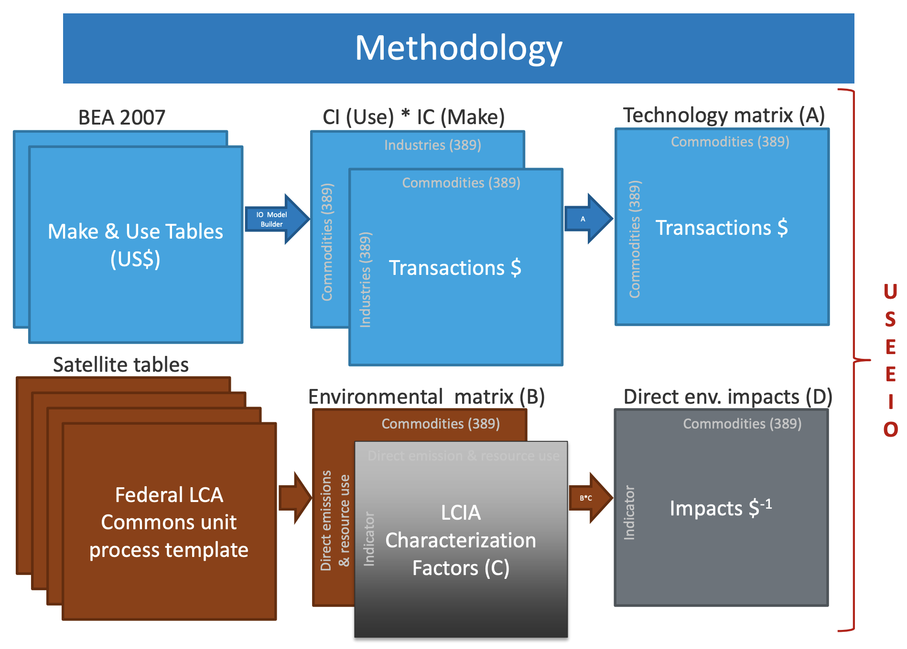

USEEIO
The U.S. Environmentally-Extended Input-Output Model

The US Environmentally Extended Input-Output Model (USEEIO) is a national life cycle model created by the US Environmental Protection Agency that combines environmental and economic data to characterize both positive and negative effects associated with the production and consumption of goods and services in the United States. It tracks close to 400 commodities and over 2000 resources, emissions, and waste types to characterize 20+ environmental and economic indicators. USEEIO is widely used by corporations, including Amazon, nonprofits, government and academia for applications such as carbon footprinting and sector-based environmental assessment. USEEIO is an analytical model that can be used to support sustainable materials management.
Sustainable Materials Management
Sustainable materials management (SMM) is a systemic approach to using and reusing materials more productively over their entire life cycle. It represents a change in how our society thinks about the use of natural resources and environmental protection. By looking at a product's entire life cycle, we can find new opportunities to reduce environmental impacts, conserve resources, reduce costs and attract new industries.
Who's using the model?
- US EPA's Sustainable Material Management Prioritization Tool Suite
- Amazon Carbon Footprint
- Alamaeda County Supply Chain Sustainability Report
- NREL/DOE Bioeconomy Assessment Framework
- Model Georgia Web Challenge
Communities, Universities, Businesses and Government
- 24 Universities, including University of Pennsylvania, Yale, Carnegie Mellon, Harvard, University of Washington
- Colorado School of Mines
- Alameda County Supply Chain Sustainability
- NREL/DOE Bioeconomy Assessment Framework
- EPA’s Sustainable Material Management Prioritization Tool Suite
USEEIO - Ongoing activities
- Updating national model to add material flows and new industries
- Refining and updating the GA model
- Research within EPA's Sustainable and Healthy Communities 2019-2022 Research Program
New uses for communities
- Integrating with local data
- Scenario analysis - technology assessment
- Material recovery and its impacts
- Tools similar to EPA's model for Recycling Economic Impact Assessment
Embeddable USEEIO widgets